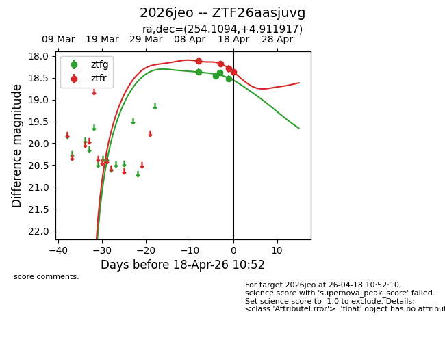
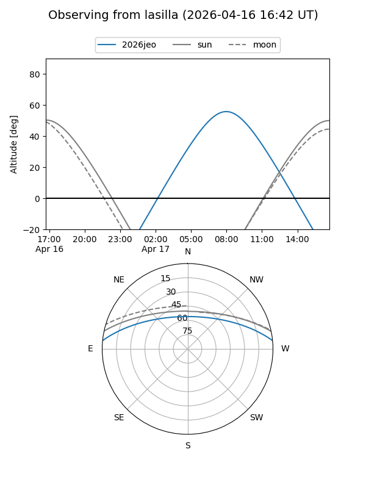
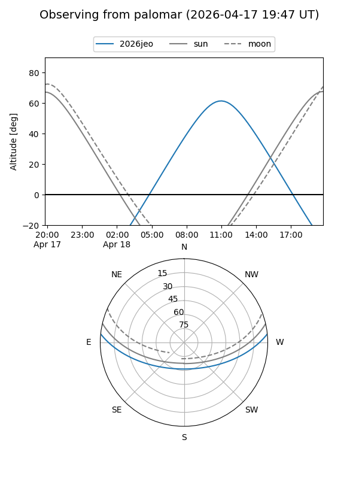
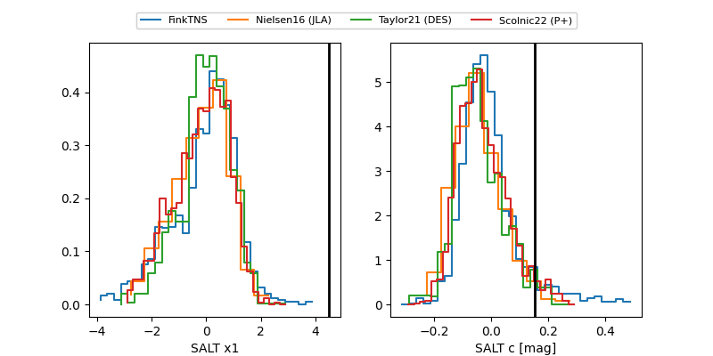

2026jeo
Target 2026jeo at 2026-04-18 10:56
Aliases and brokers:
FINK: link
Lasair: link
ALeRCE: link
TNS: link
YSE: link
alt names
ZTF26aasjuvg (ztf,fink_ztf)
2026jeo (tns,yse)
Coordinates:
equatorial (ra, dec) = 254.1094,+4.91192
equatorial (HMS+DMS) = 16:56:26.25,+04:54:42.90
galactic (l, b) = (23.6784,+27.74563)
Flags:
Photometry:
last ztfg=18.52, ztfr=18.36
4 ztfg, 4 ztfr detections
Lightcurve

Visibility


Additional plots
